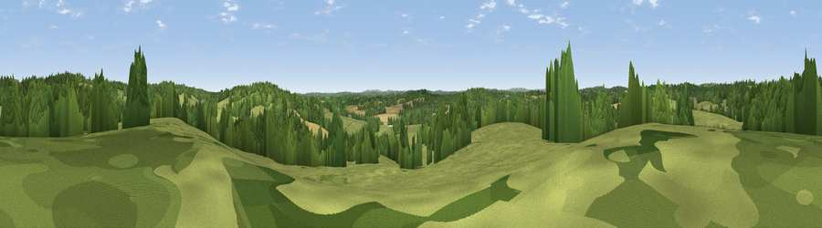

Viewpoint near Iden Green
#34968 in England · top 48% of its area beats it · near Iden GreenThe view, rendered

A 360° render of this exact spot computed from the terrain model, tree cover and land cover — summer colours, afternoon light, calibrated against photographs of famous viewpoints. Real trees, hedges and buildings will differ in detail.
The panorama
Grey silhouette: terrain skyline in each direction (720 bearings, Earth curvature and refraction included). Dashed green: skyline with trees (+15 m) and buildings (+8 m) as obstacles. Blue strip: how far the ground is visible on each bearing.
Where the view opens
Wedge length = distance to the farthest visible ground on that bearing (vegetation-aware). Rings at 10, 25 and 50 km.
What fills the view
59% grassland · 31% woodland · 9% cropland ·
Angular shares of the visible panorama (visual magnitude), not map area. Landscape diversity 0.40 (0–1 Shannon).
Key numbers
More beautiful places nearby
The staircase of upgrades: each row has a higher view potential than everything closer. Driving times are estimates from straight-line distance, calibrated against real road routing — check an actual route before setting out.
| Place | Direction | Drive | Score |
|---|---|---|---|
| Viewpoint near Sponden | S · 3 km | ~8 min | 45.9 |
| Viewpoint near Hartley | WNW · 4 km | ~8 min | 50.1 |
| Blackbush Wood Hill | NW · 6 km | ~12 min | 53.5 |
| Silver Hill | SW · 8 km | ~16 min | 54.9 |
| Viewpoint near Netherfield | SW · 15 km | ~27 min | 64.5 |
| Brightling Obelisk [Brightling Down] | SW · 16 km | ~29 min | 69.1 |
| Viewpoint near Three Oaks | S · 20 km | ~34 min | 69.3 |
| Viewpoint near Fairlight | SSE · 21 km | ~36 min | 74.7 |
51.06054, 0.55408 · source: screening · position refined by local search. Computed location — check access rights before visiting.